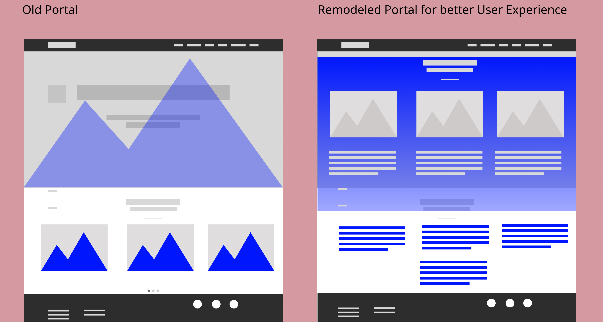

Accenture library is a knowledge powerhouse for employees to improve their skillset, vocabulary, knowledge or even read to relax. Many useful resources are present in the library portal and the employees can access the online resources at any time as long as they are employed. Since many of the employees were unaware of the existence of the library within the company, we decided on spreading awareness and re-modelling the library portal, creating a mobile app for the frequently used URLs.

01 CONCEPT | BRAINSTORM | INFORMATION GATHERING
My role during this phase: (1st Sprint)

The posters were printed and displayed across the company. I prepared the newsletter template and it was shared across every Monday - called "Motivational Mondays"! There were several contests going through mail like crosswords etc., and the library portal was now under good usage. Here is when our second sprint started. The Library portal website started getting hits and the employees started visiting the library.
02 USER RESEARCH
We met with the teams to which was responsible of the portal development the business requirement was "To Increase the employees' awareness of the existence of the library and utilization of the available facilities provided to the employees."
First, we conducted the initial in-person interviews with the employees who came to visit the library. We chose 6 participants representing different requirement and career aspirations.
I came up with three personas based on the user research. Mary, Peter and Joshua with different work experience, reading habits and need for the library.

03 DESIGN OPTIONS
We started brainstorming different ideas and layouts. My main motive here was to do minimal changes to the existing portal design whilst making it easily accessible and user friendly. I began my design process with low fidelity sketches.
04 UI DESIGN
Since we were re-designing the existing portal, I decided to go with the current typography, color palette and branding logos with some additional complementary fonts and colors that would enhance the user interaction.
After the sketches were ready, I met with the developers and discussed on the coding constraints and timelines. We decided to reuse of most of the existing components as it involved minimal changes to the existing code.
After this phase, I started creating a prototype for testing. I used Invision Studio and Invision as it was easy to collaborate, being on the same page. Since the analytics found that the most clicked part of the website was borrowing, and most of our personas suggested this feature, I also created a mockup for a very basic App that would focus on borrowing and notification of due dates and availability of the resources.
05 USABILITY TESTING:
Before we went live with the changes, I've made a testing round in order to reveal possible usability problems. To better understand how users interact without newly changed portal, I conducted A/B Testing.
I also concluded how our personas would respond to the changes:
Mary: "I get notifications, and am able to track the resources I need!"
Peter: "The search algorithm is better now and I know the site map and everything is
accessible"
Joshua: "I can publish my experience in the blog section and am able to guide interns
outside my
team as well"